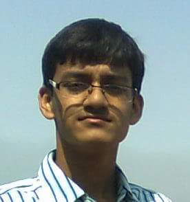

<div class="container">
	<div class="row">
        <div id="speaker-detail" class="col-lg-6 col-lg-offset-3">
            <div class="row">
            	<button title="Close (Esc)" type="button" class="mfp-close">×</button>
                
                <div class="col-md-4 col-lg-4">
                    <br />                    
                    <i class="fa fa-lg fa-facebook-square"></i><a href="https://www.facebook.com/syed.maseehullah1">Facebook</a></br> 					
					<i class="fa fa-lg fa-google-plus-square"></i><a href="https://plus.google.com/118116770258956037789">Google +</a></br> 					
					<i class="fa fa-lg fa-twitter-square"></i><a href="https://twitter.com/syed_jawad1">Twitter</a></br> 								
                </div>
				
				
                    
                <div class="col-md-8 col-lg-8">
                    <h2>Syed MASEEHULLAH</h2>
                    <h3>Marathon Route map</h3>
                    <p>SYED MASEEHULLAH, student of MIT, pursuing Engineering in Electronics and Communication. He did is schooling in JSS PUBLIC SCHOOL and completed college from FAROOQIA PU COLLEGE.Captivated and Enthralled by the wonders of electronics he opted for ECE. Presently he is doing a project using GSM technology under the guidance of Prof.Rajesh and Prof.Srinivasa M.G. Listening to music, reading fictional novels, playing badminton account for his hobbies.</p>
                </div>
            
            </div>
        </div>
    </div>
</div>